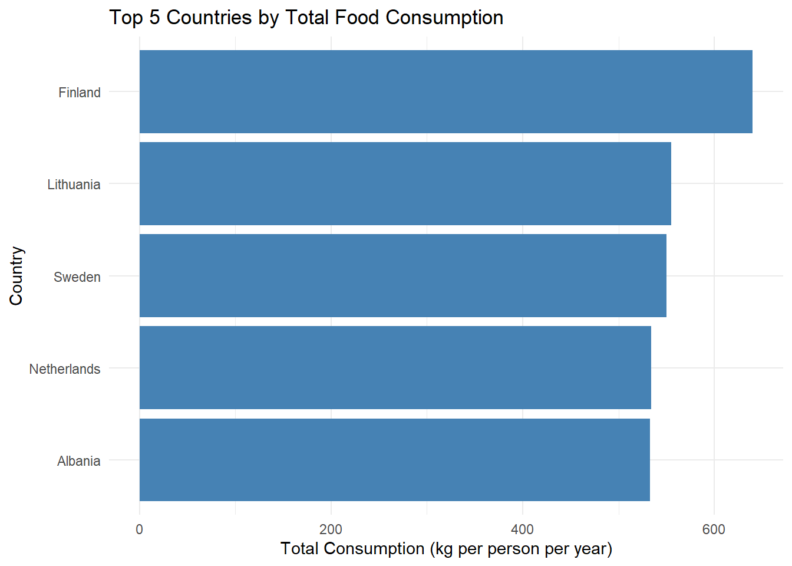
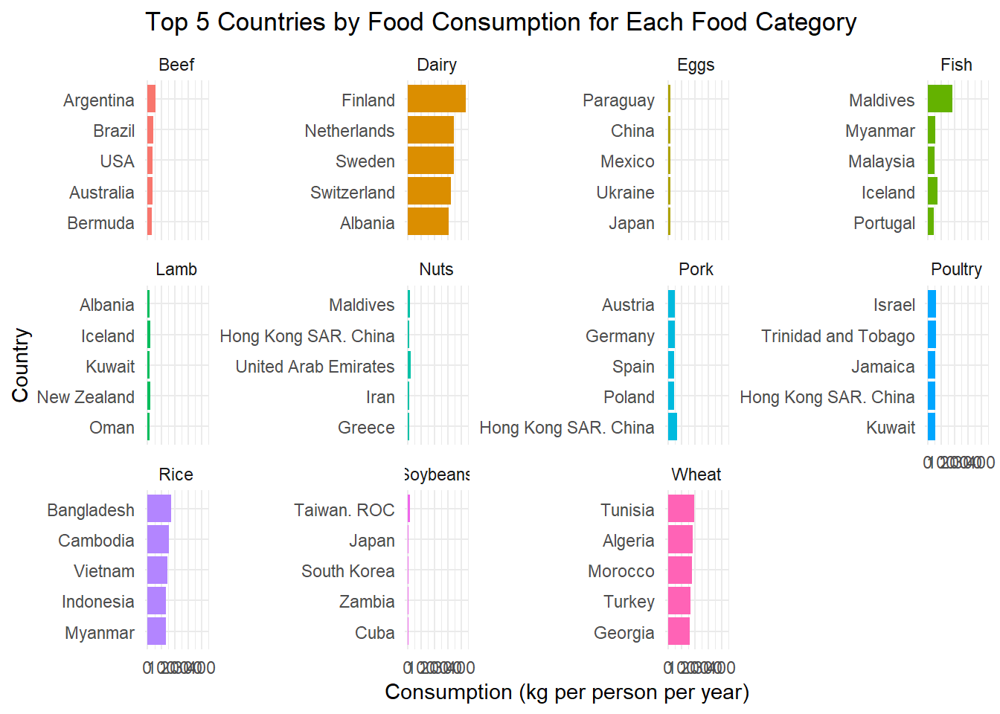
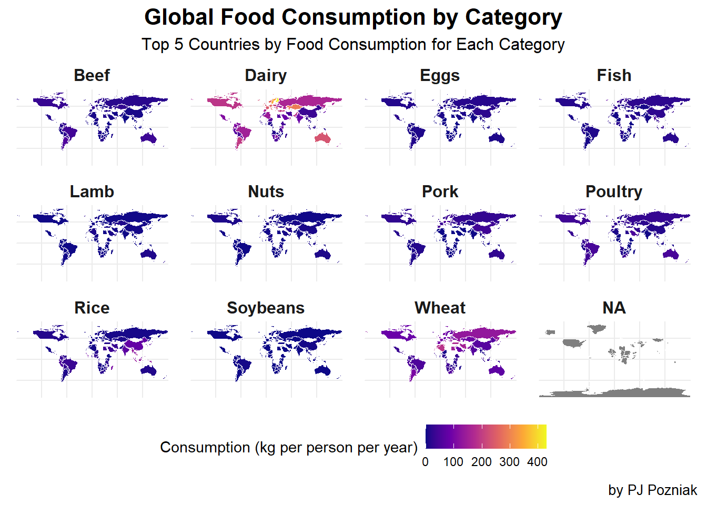

Warning: package 'tidytuesdayR' was built under R version 4.4.3
library(tidyverse)
Warning: package 'tidyverse' was built under R version 4.4.2
── Attaching core tidyverse packages ──────────────────────── tidyverse 2.0.0 ──
✔ dplyr 1.1.4 ✔ readr 2.1.5
✔ forcats 1.0.0 ✔ stringr 1.5.1
✔ ggplot2 3.5.1 ✔ tibble 3.2.1
✔ lubridate 1.9.3 ✔ tidyr 1.3.1
✔ purrr 1.0.2
── Conflicts ────────────────────────────────────────── tidyverse_conflicts() ──
✖ dplyr::filter() masks stats::filter()
✖ dplyr::lag() masks stats::lag()
ℹ Use the conflicted package (<http://conflicted.r-lib.org/>) to force all conflicts to become errors
library(rnaturalearth)
Warning: package 'rnaturalearth' was built under R version 4.4.2
library(sf)
Warning: package 'sf' was built under R version 4.4.2
Linking to GEOS 3.13.0, GDAL 3.10.1, PROJ 9.5.1; sf_use_s2() is TRUE
tuesdata <-tt_load('2020-02-18')
---- Compiling #TidyTuesday Information for 2020-02-18 ----
--- There is 1 file available ---
── Downloading files ───────────────────────────────────────────────────────────
1 of 1: "food_consumption.csv"
# A tibble: 22 × 4
country food_category consumption co2_emmission
<chr> <chr> <dbl> <dbl>
1 Argentina Pork 10.5 37.2
2 Argentina Poultry 38.7 41.5
3 Argentina Beef 55.5 1712
4 Argentina Lamb & Goat 1.56 54.6
5 Argentina Fish 4.36 6.96
6 Argentina Eggs 11.4 10.5
7 Argentina Milk - inc. cheese 195. 278.
8 Argentina Wheat and Wheat Products 103. 19.7
9 Argentina Rice 8.77 11.2
10 Argentina Soybeans 0 0
# ℹ 12 more rows
fc %>%count(food_category)
# A tibble: 11 × 2
food_category n
<chr> <int>
1 Beef 130
2 Eggs 130
3 Fish 130
4 Lamb & Goat 130
5 Milk - inc. cheese 130
6 Nuts inc. Peanut Butter 130
7 Pork 130
8 Poultry 130
9 Rice 130
10 Soybeans 130
11 Wheat and Wheat Products 130
What is the problem with these values? The length of the names
List the necessary wrangling function to shortne the food category names shown in the table above. The resulting dataframe should be stored to a variable called fcc 1. fct_recode() 2. summarize() 3. str_replace_all() 4. str_replace()
fc_cleaned <- fc %>%mutate(food_category =case_when( food_category =="Lamb & Goat"~"Lamb", food_category =="Milk - inc. cheese"~"Dairy", food_category =="Wheat and Wheat Products"~"Wheat", food_category =="Nuts inc. Peanut Butter"~"Nuts",TRUE~ food_category # keep everything else the same ))
Research question 1:Which 5 countries consume the most food are?
List the neccessary steo to produce the needed dataframe: 1. select(country,consumption) 2. group_by(country) 3. summarize(consumption=sum(consumption)) 4. arrange 5.head
which graph types can be used to visualize the produced dataframe? 1. boxplots 2. bar graphs 3 bar chart 4. geom column
# A tibble: 5 × 2
country total_consumption
<chr> <dbl>
1 Finland 640.
2 Lithuania 555.
3 Sweden 550
4 Netherlands 534.
5 Albania 533.
library(ggplot2)ggplot(top5_countries, aes(x =reorder(country, total_consumption), y = total_consumption)) +geom_col(fill ="steelblue") +coord_flip() +labs(title ="Top 5 Countries by Total Food Consumption",x ="Country",y ="Total Consumption (kg per person per year)") +theme_minimal()

8.3 4
Research Question 2: Which top 5 countries consume each food are?
List the neccessary step to compute the required dataframe 1. select 2. group_by 3. slice_max
which graphs can be used to visualize this data frame? 1. facet 2. columns
# Step 1: Get top 5 countries by food categorytop5_by_food <- fc_cleaned %>%group_by(food_category) %>%arrange(desc(consumption)) %>%# sort within each foodslice_head(n =5) %>%# take top 5 per foodungroup()# Step 2: View the 3-column tabletop5_by_food %>%select(food_category, country, consumption)
# A tibble: 55 × 3
food_category country consumption
<chr> <chr> <dbl>
1 Beef Argentina 55.5
2 Beef Brazil 39.2
3 Beef USA 36.2
4 Beef Australia 33.9
5 Beef Bermuda 33.2
6 Dairy Finland 431.
7 Dairy Netherlands 341.
8 Dairy Sweden 341.
9 Dairy Switzerland 319.
10 Dairy Albania 304.
# ℹ 45 more rows
# Plot: top 5 countries for each foodggplot(top5_by_food, aes(x =reorder(country, consumption), y = consumption, fill = food_category)) +geom_col(show.legend =FALSE) +coord_flip() +facet_wrap(~ food_category, scales ="free_y") +# one small plot per foodlabs(title ="Top 5 Countries by Food Consumption for Each Food Category",x ="Country",y ="Consumption (kg per person per year)" ) +theme_minimal()

8.4 5
Research question 3: What does the consumption of each food look like?
The plot above sufferes from a bad color scheme, no units, no boundaries, no title
library(ggplot2)library(dplyr)library(sf)ne_countries(returnclass ="sf") |>select(name, geometry) |>left_join(fc_cleaned |>select(-co2_emmission), by =c("name"="country")) |>ggplot() +geom_sf(aes(fill = consumption), color ="white") +# Color borders for countriesfacet_wrap(~food_category) +scale_fill_viridis_c(option ="plasma", name ="Consumption (kg per person per year)") +# Better color schemelabs(title ="Global Food Consumption by Category",subtitle ="Top 5 Countries by Food Consumption for Each Category",caption ="by PJ Pozniak" ) +theme_minimal() +theme(legend.position ="bottom",strip.text =element_text(size =12, face ="bold"),plot.title =element_text(size =16, face ="bold", hjust =0.5),plot.subtitle =element_text(size =12, hjust =0.5),plot.caption =element_text(size =10, hjust =1) )

This one has a better color scheme, a title, and better labels
library(dplyr)# Calculate the min, max, and range for each food categoryfood_summary <- fc_cleaned |>group_by(food_category) |>summarise(min_consumption =min(consumption, na.rm =TRUE),max_consumption =max(consumption, na.rm =TRUE),range_consumption =max(consumption, na.rm =TRUE) -min(consumption, na.rm =TRUE) )# Print the summaryprint(food_summary)
---title: "Exam_2"format: html---## 2 Background```{r}library(tidytuesdayR)library(tidyverse)library(rnaturalearth)library(sf)``````{r}tuesdata <-tt_load('2020-02-18')fc <- tuesdata$food_consumption``````{r}str(fc)head(fc, 22)``````{r}fc %>%count(food_category)```What is the problem with these values?The length of the namesList the necessary wrangling function to shortne the food category names shown in the table above. The resulting dataframe should be stored to a variable called fcc1. fct_recode()2. summarize()3. str_replace_all()4. str_replace()```{r}fc_cleaned <- fc %>%mutate(food_category =case_when( food_category =="Lamb & Goat"~"Lamb", food_category =="Milk - inc. cheese"~"Dairy", food_category =="Wheat and Wheat Products"~"Wheat", food_category =="Nuts inc. Peanut Butter"~"Nuts",TRUE~ food_category # keep everything else the same ))``````{r}fc_cleaned %>%count(food_category)```## 3Research question 1:Which 5 countries consume the most food are?List the neccessary steo to produce the needed dataframe:1. select(country,consumption)2. group_by(country)3. summarize(consumption=sum(consumption))4. arrange5.headwhich graph types can be used to visualize the produced dataframe?1. boxplots2. bar graphs3 bar chart4. geom column```{r}library(dplyr)top5_countries <- fc %>%group_by(country) %>%summarise(total_consumption =sum(consumption, na.rm =TRUE)) %>%arrange(desc(total_consumption)) %>%slice_head(n =5)print(top5_countries)``````{r}library(ggplot2)ggplot(top5_countries, aes(x =reorder(country, total_consumption), y = total_consumption)) +geom_col(fill ="steelblue") +coord_flip() +labs(title ="Top 5 Countries by Total Food Consumption",x ="Country",y ="Total Consumption (kg per person per year)") +theme_minimal()```## 4Research Question 2: Which top 5 countries consume each food are?List the neccessary step to compute the required dataframe1. select2. group_by3. slice_maxwhich graphs can be used to visualize this data frame?1. facet2. columns```{r}# Step 1: Get top 5 countries by food categorytop5_by_food <- fc_cleaned %>%group_by(food_category) %>%arrange(desc(consumption)) %>%# sort within each foodslice_head(n =5) %>%# take top 5 per foodungroup()# Step 2: View the 3-column tabletop5_by_food %>%select(food_category, country, consumption)``````{r}# Plot: top 5 countries for each foodggplot(top5_by_food, aes(x =reorder(country, consumption), y = consumption, fill = food_category)) +geom_col(show.legend =FALSE) +coord_flip() +facet_wrap(~ food_category, scales ="free_y") +# one small plot per foodlabs(title ="Top 5 Countries by Food Consumption for Each Food Category",x ="Country",y ="Consumption (kg per person per year)" ) +theme_minimal()```## 5Research question 3: What does the consumption of each food look like?```{r}ne_countries(returnclass ="sf") |>select(name, geometry) |>left_join(fc_cleaned |>select(-co2_emmission), join_by(name == country)) |>ggplot() +geom_sf(aes(fill = consumption)) +facet_wrap(~food_category) +theme(legend.position ="bottom")```The plot above sufferes from a bad color scheme, no units, no boundaries, no title```{r}library(ggplot2)library(dplyr)library(sf)ne_countries(returnclass ="sf") |>select(name, geometry) |>left_join(fc_cleaned |>select(-co2_emmission), by =c("name"="country")) |>ggplot() +geom_sf(aes(fill = consumption), color ="white") +# Color borders for countriesfacet_wrap(~food_category) +scale_fill_viridis_c(option ="plasma", name ="Consumption (kg per person per year)") +# Better color schemelabs(title ="Global Food Consumption by Category",subtitle ="Top 5 Countries by Food Consumption for Each Category",caption ="by PJ Pozniak" ) +theme_minimal() +theme(legend.position ="bottom",strip.text =element_text(size =12, face ="bold"),plot.title =element_text(size =16, face ="bold", hjust =0.5),plot.subtitle =element_text(size =12, hjust =0.5),plot.caption =element_text(size =10, hjust =1) )```This one has a better color scheme, a title, and better labels```{r}library(dplyr)# Calculate the min, max, and range for each food categoryfood_summary <- fc_cleaned |>group_by(food_category) |>summarise(min_consumption =min(consumption, na.rm =TRUE),max_consumption =max(consumption, na.rm =TRUE),range_consumption =max(consumption, na.rm =TRUE) -min(consumption, na.rm =TRUE) )# Print the summaryprint(food_summary)```